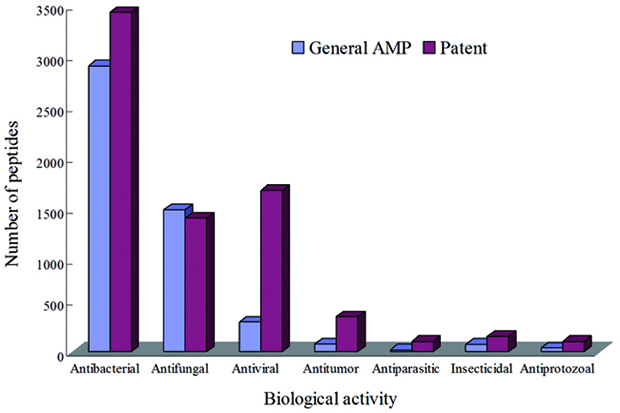
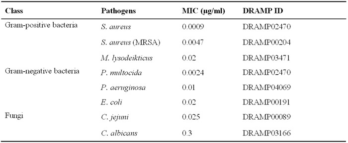
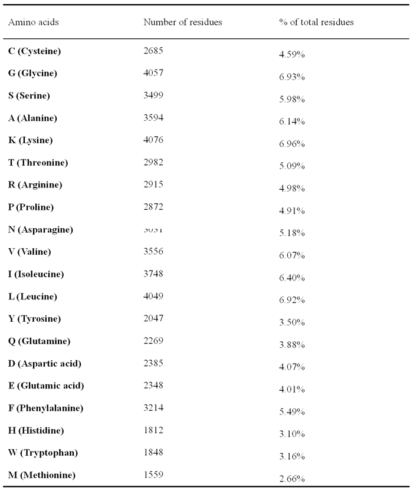
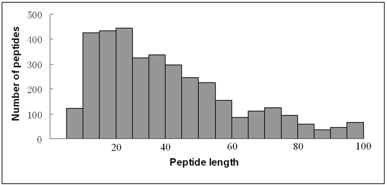

1. The distribution of antimicrobial activity type in General AMP and Patent dataset.
2. Top 8 AMPs for antimicrobial activity against common pathogens in DRAMP
3. Amino acid occurrence in the DRAMP database
4. Histogram of peptide length distribution in the DRAMP database
5. Frequently used amino acid residues in naturally occurring antimicrobial peptides isolated
from bacteria, plants, insects, frogs or mammals in DRAMP